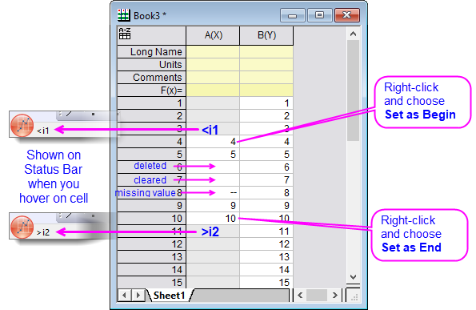
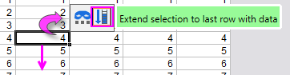

Scrollen und einfache Datenauswahl im Arbeitsblatt
Scroll-DataSel-in-Wks
Zeichen- und Analyseoperationen werden im Allgemeinen auf der Grundlage ausgewählter Daten des aktiven Arbeitsblatts ausgeführt.
|
Hinweis: Viele der auf X-Funktionen basierenden Dialogfelder besitzen ein oder mehrere interaktive Bereichsauswahlen, die, wenn aktiviert, die "Jagd" nach Daten im Origin-Projekt erlauben. Die Verwendung dieses Bedienelements wird unter Ihre Eingabedaten festlegen beschrieben.
|
Nicht verwendete Arbeitsblattzellen, schattierter Hintergrund und fehlende Werte
Seit Origin 2019 haben "nicht verwendete" Arbeitsblattzellen einen schattierten Hintergrund. Dies wurde hinzugefügt, um deutlicher zu machen, welche Spaltendaten in Zeichen- und Analyseoperationen gezählt werden. Im folgenden Bild können Sie sehen, dass sich in der Spalte A(X) drei nicht verwendete Zellen befinden, gefolgt von einer Sequenz von sieben verwendeten Zellen, gefolgt von einer weiteren Sequenz nicht verwendeter Zellen.
-
- 
Einige Hinweise:
-
- Die (mittlere) Sequenz der verwendeten Zellen enthält Zellen mit Daten, leere Zellen und Zellen, die das Symbol des fehlenden Werts ("--") enthalten.
- Innerhalb einer gegebenen Spalte werden diejenigen Zellen, deren Indexnummer kleiner als die erste verwendete (unschattiert) Zelle ist, als "<i1" betrachtet -- das heißt, kleiner als der Index der ersten verwendeten Zelle in der Spalte. Außerdem werden diejenigen Zellen, deren Indexnummer größer als die letzte verwendete Zelle ist, als ">2" betrachtet -- das heißt, größer als der Index der letzten verwendeten Zelle in der Spalte.
- Die Indexnummern "i1" und "i2" sind zwei Werte, die Origin intern zum Definieren eines Spaltenzellenbereichs verwendet, der in Zeichen- und Analyseoperationen berücksichtigt wird. Wir sprechen von "berücksichtigt", da, abhängig von der Operation, leere Zellen oder Zellen, die fehlende Werte enthalten, gezählt werden können oder auch nicht . (Lesen Sie in der Dokumentation der einzelnen Hilfsmittel nach, wie leere Zellen und fehlende Werte behandelt werden.) Meistens müssen sich Anwender nicht um Eigenschaften wie "i1" und "i2" kümmern. Die Hintergrundschattierung der Arbeitsblattzellen ist Ihr visueller Hinweis auf "nicht verwendete Zellen".
- Vor Origin 2019, wenn Sie Zellen beim manuellen Eingeben von Daten in eine Spalte übersprungen haben oder auf eine Zelle geklickt und die Option Löschen unter Bearbeiten oder im Kontextmenü gewählt haben, wurde ein Symbol für einen fehlenden Wert ("--") in der Arbeitsblattzelle platziert. Seit Origin 2019 werden diese übersprungenen Zellen standardmäßig als leer angezeigt. Um zum Verhalten vor 2019 zurückzukehren, setzen Sie die LabTalk-Systemvariable @CDB = 0 (weitere Informationen zum Ändern des Werts einer Systemvariable, siehe diese FAQ).
Auswählen von Zellen (angrenzende oder nicht angrenzende Auswahl)
- Um eine zusammenhängende Gruppe von Arbeitsblattzellen auszuwählen, klicken und ziehen Sie mit der Maus, um die Zellen auszuwählen (siehe unten Spalten auswählen oder Zeilen).
- Um die Auswahl bis zur letzten Daten enthaltenen Zeile in der Spalte zu erweitern, können Sie auch eine der Minisymbolleistenschaltflächen des Arbeitsblatts verwenden.
-
- 
- Um alle Zellen zwischen der ausgewählten Zelle in Zeile (i), Spalte (j) und der Zelle in der oberen linken Ecke des Blatts auszuwählen, drücken Sie Strg + Shift + Pos1.
- Um nicht angrenzende Zellen in einem Arbeitsblatt auszuwählen, halten Sie die STRG-Taste gedrückt, während Sie mehrere Bereiche auswählen.
- Um Zellen bis zu leeren Zellen bzw. Zellen mit fehlenden Werten zu markieren, halten Sie Strg + Shift und drücken Sie die Pfeiltaste, um die Auswahl zu machen. Durch Wiederholen der Operation werden die leeren Zellen bzw. die Zellen mit fehlenden Werten, plus die Zelle mit dem nächsten Wert, ausgewählt. Alternativ können Sie die Auswahl über die leeren/fehlenden Zellenwerte hinaus erzwingen, indem Sie @ESL = 1 setzen. Siehe diese FAQ für Informationen zum Ändern des Werts einer Systemvariable.
|
Hinweis: Durch Drücken der Strg-Taste können Sie nicht zusammenhängende Auswahlen innerhalb einer einzelnen Spalte von Arbeitsblattdaten vornehmen. Jede Auswahl erstellt eine separate Zeichnung. Zum Zeichnen werden mehrere nicht zusammenhängende Auswahlen zu einem Gruppendiagramm zusammengefügt, wobei eine Registerkarte Gruppe zum Dialog Details Zeichnung hinzugefügt wird.
|
Auswählen von Spalten (angrenzende oder nicht angrenzende Auswahl)
- Um zusammenhängende Spalten im Arbeitsblatt auszuwählen, klicken Sie auf den ersten Spaltenkopf im gewünschten Bereich und ziehen den Zeiger dann bis zur letzten Spalte des gewünschten Bereichs. Lassen Sie die Maustaste los, um diese Spalten auszuwählen. Klicken Sie alternativ, um die erste Spaltenüberschrift im gewünschten Bereich auszuwählen, und scrollen Sie dann das Arbeitsblatt (ggf. mit Hilfe der Laufleisten am unteren Ende des Arbeitsblatts) hinunter, um die letzte Spalte des gewünschten Bereichs anzuzeigen. Halten Sie die Shift-Taste gedrückt und klicken Sie auf die Überschrift der letzten Spalte.
- Alternative Auswahl für zusammenhängende Spalten: Markieren Sie eine Spalte, drücken Sie die SHIFT-Taste und verwenden Sie die Pfeiltasten nach LINKS und RECHTS, um angrenzende Spalten auszuwählen.
- Um nicht zusammenhängende Spalten im Arbeitsblatt auszuwählen, klicken Sie, um die erste Spaltenüberschrift auszuwählen, halten Sie dann die Strg-Taste gedrückt, während Sie auf die zusätzlichen Spaltenüberschriften klicken.
Auswählen von Zeilen (angrenzende oder nicht angrenzende Auswahl)
- Um einen zusammenhängenden Zeilenbereich auszuwählen, klicken Sie auf die erste Zeilenüberschrift im gewünschten Bereich und ziehen die Maus dann bis zur letzten Zeile des gewünschten Bereichs. Mit dem Loslassen der Maustaste sind die Zeilen ausgewählt. Klicken Sie alternativ auf die erste Zeilenüberschrift im gewünschten Bereich, scrollen Sie durch das Arbeitsblatt, bis die letzte Zeile des gewünschten Bereichs erscheint, und klicken Sie dann bei gedrückter Shift-Taste auf diese letzte Zeilenüberschrift.
- Alternative Auswahl für zusammenhängende Spalten: Markieren Sie eine Zeile, drücken Sie die SHIFT-Taste und verwenden Sie die Pfeiltasten nach OBEN und UNTEN, um angrenzende Zeilen auszuwählen.
- Um nicht zusammenhängende Zeilen auszuwählen, drücken Sie während des Ziehens die STRG-Taste.
Auswählen des gesamten Arbeitsblatts
Um alle Spalten in einem Arbeitsblatt auszuwählen, führen Sie eine der folgenden Operationen aus:
- Zeigen Sie auf den leeren Bereich in der oberen linken Ecke des Arbeitsblatts. Wenn der Zeiger ein nach unten weisender Pfeil wird, klicken Sie einmal, um alle Spalten (Datensätze) im Arbeitsblatt auszuwählen.
- Klicken Sie, um die erste Zelle auszuwählen (oben links), und drücken Sie dann die Tasten STRG + SHIFT + ENDE, um die Auswahl bis zur letzten gefüllten Zelle im Blatt (unten rechts) zu erweitern.
- Wählen Sie per Mausklick den ersten Spaltenkopf aus und ziehen Sie den Mauszeiger über alle restlichen Spaltenköpfe im Arbeitsblatt.
- Klicken Sie, um die erste Spaltenüberschrift auszuwählen, scrollen Sie dann das Arbeitsblatt, bis die letzte Spalte sichtbar ist, und klicken Sie bei gedrückter Shift-Taste auf die letzte Spaltenüberschrift.
Zu einer bestimmten Spalten- oder Zeilennummer scrollen
Um eine bestimmte Spalte oder Zeile im Arbeitsblatt zu finden:
- Wählen Sie Bearbeiten: Gehe zu oder klicken Sie mit der rechten Maustaste in das Arbeitsblattfenster (aber rechts neben das Arbeitsblattgitter) und wählen Sie anschließend im Kontextmenü Gehe zu aus.
- Geben Sie in den sich öffnenden Dialog Data Exploration die Spalten-/Zeilennummer im Textfeld Gehe zu Spalte/Gehe zu Zeile ein und klicken Sie auf OK. Beim Festlegen von Spalten- und Zeilennummer springt Origin zu dieser Zelle.